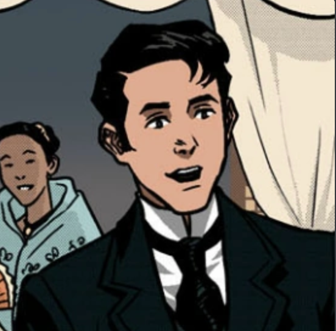
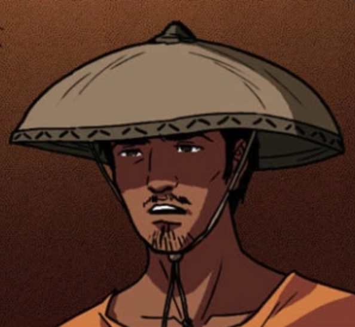

| Kapitan Tiago |
Kapitán Tiago is one of the wealthy Filipinos in the story. His character has some flaws though, like how he talks badly and oppresses his own people. |

|
| Maria Clara |
Maria Clara was the daughter of Padre Dámaso but raised by Kapitán Tiago. She is also known to be the protaganist's childhood crush. |

|
| Padre Dámaso |
Padre Damaso is known in the story as the town's Priest. He is also known to be very arrogant and is the real father of Maria Clara |
| 
|
| Crisostomo Ibarra |
Crisostomo was a student that has retured to his town after a few years in europe. When he returned back to the Philippines he wanted to make the country better and tried to make a school for the town of San Diego. |
| 
|
| Elias |
Elias is mainly unknown in this story. But what we do know is that he is a criminal that is staying in San Diego. |
References
Site I used for Images